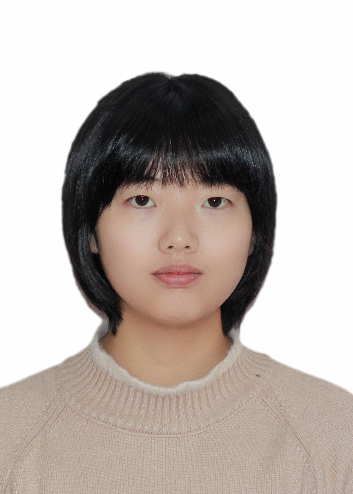

宫晓霞（Xiaoxia Gong)
|  | 性别：女 |
| 出生年月：2001年12月 | |
| 籍贯：山西省大同市灵丘县 | |
| 专业：财务管理 | |
| 政治面貌：共青团员 | |
| 电子邮件：2936724472@qq.com |
教育背景
中学就读于山西省大同市灵丘县第一中学校，大学就读于湖南工商大学，目前大二在读。
主修课程
中级财务会计学、会计信息系统、管理会计学、高级财务管理、国际财务管理、财务分析学
获奖情况
全国高校企业价值创造实战竞赛-校内赛三等奖。
兴趣爱好
文学、历史、羽毛球
技能总结
无
自我评价
我是一个心思细腻的人，做事比较认真，愿意为一件事情付出长久的努力。我喜欢稳定的生活，对物质方面的追求不是特别强烈，更看重内心的宁静与思想的提升。我喜欢文学，喜欢历史，喜欢宇宙，热爱大自然。我希望自己成为一个积极向上的人，保持终身学习的习惯，戒骄戒躁，不气不馁，脚踏实地地向前走。